단열 기본
현장 견적
- 이보드 23T + 폼본드 전면 접착
- 항균 코팅 1회
- 합지 도배
- 보증 3년
외벽 한 면, 작은 방 모서리
곰팡이 생기는 곳 단열 전문 — 수도권
방 모서리, 북향 외벽, 붙박이장 뒤처럼 곰팡이가 반복되는 곳은 벽이 차가워 결로가 생기는 자리입니다. 팡아웃은 곰팡이를 완벽하게 제거한 뒤 단열로 원인을 막고, 도배까지 한 팀이 끝냅니다.
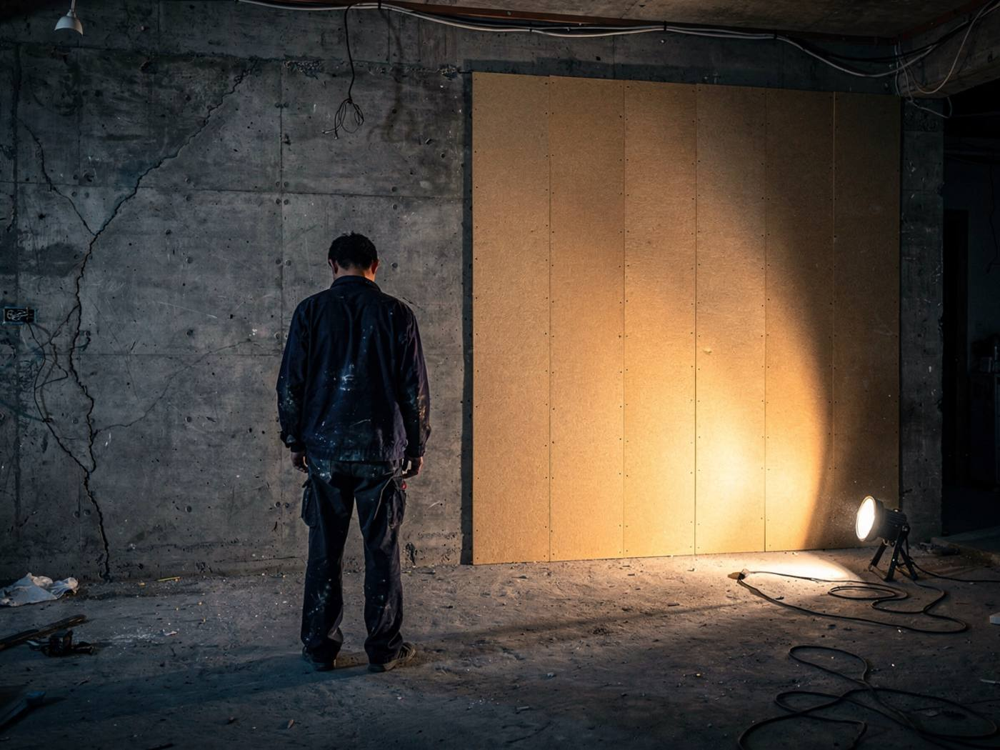
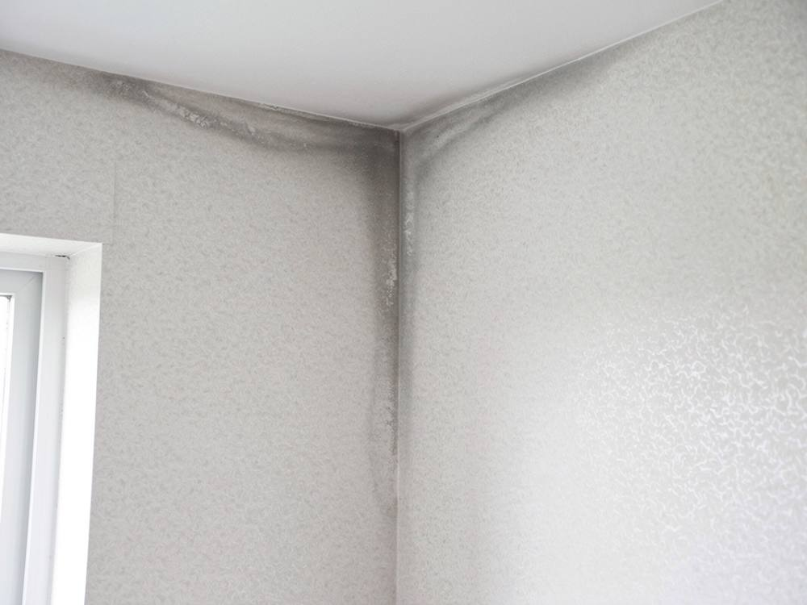
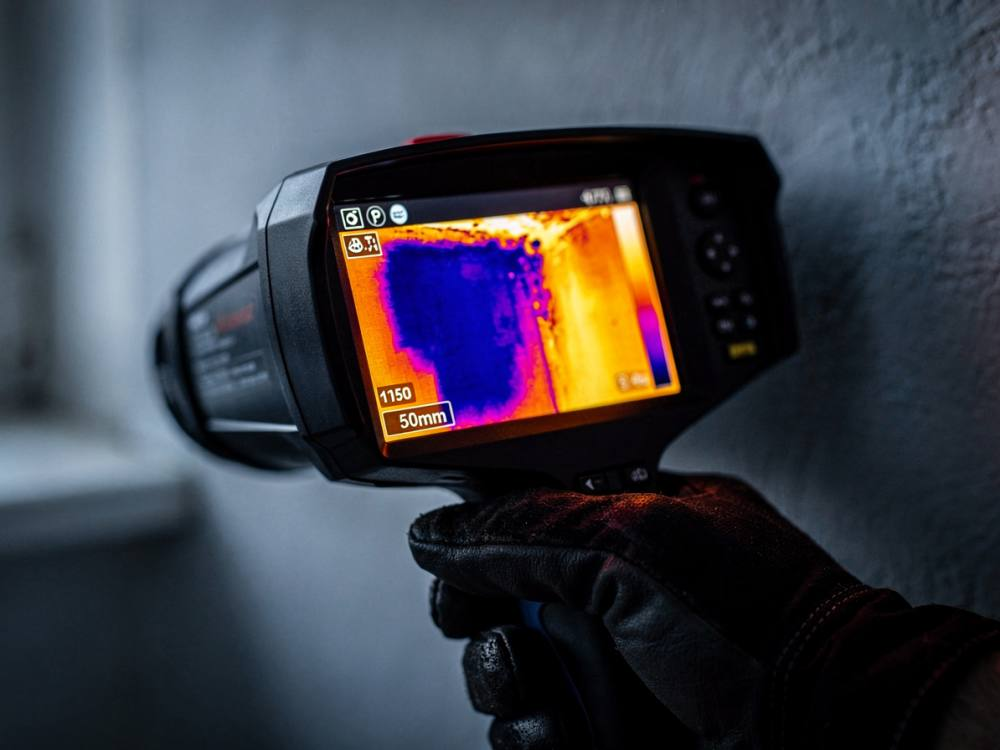
Core · Insulation
공기 중 수분은 차가운 면을 만나면 물방울이 됩니다. 이것이 결로입니다. 벽 표면 온도가 이슬점보다 낮으면 어떤 코팅도 젖습니다. 닦고 칠해도 다시 생기는 이유입니다. 팡아웃은 벽 안쪽에 단열층을 만들어 표면 온도를 올립니다.
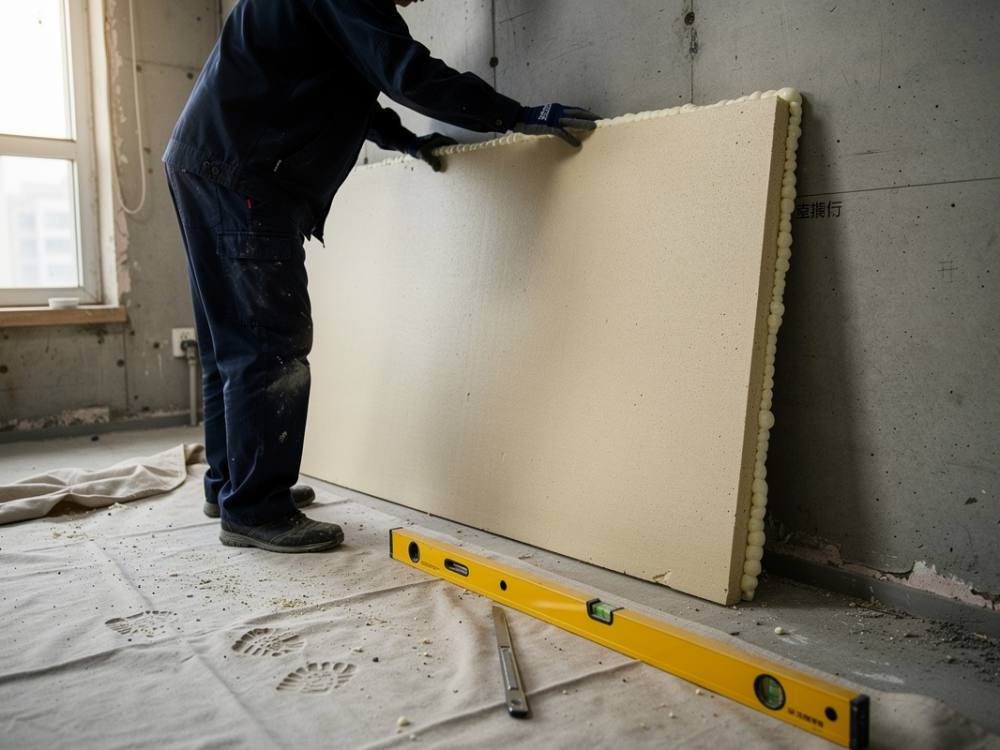
Thermal report · 예시
실내 20°C, 습도 60%일 때 이슬점은 약 12°C입니다. 벽이 9.8°C면 물이 맺히고, 17.4°C면 맺히지 않습니다. 시공 전후 같은 자리를 열화상으로 찍어 리포트로 드립니다. 위 수치는 설명용 예시입니다.
단열 보드를 폼본드로 벽에 빈틈없이 전면 접착합니다. 점으로 붙이면 보드 뒤에 공기층이 생겨 그 안에서 다시 결로가 생기기 때문입니다. 이음새는 기밀 테이프로 막고, 항균 코팅 뒤 도배로 마감합니다. 목공부터 도배까지 자체 팀이 합니다.
현장 견적
외벽 한 면, 작은 방 모서리
가장 많이 선택
현장 견적
북향 외벽 전체, 확장 발코니
탄성 코팅, 곰팡이 제거, 단열 모두 면적과 상태를 보고 견적을 드립니다. 사진 3장이면 당일 개략 견적, 방문 진단은 무료입니다.
What we do
방 안 벽에 반복되는 곰팡이는 단열이 답입니다. 이미 핀 곰팡이는 단열 전에 뿌리까지 걷어 내고, 물을 쓰는 베란다·다용도실은 탄성 코팅으로 막습니다. 진단에서 벽 온도를 재고 필요한 공사만 권합니다.
외벽 방, 북향 벽, 붙박이장 뒤처럼 차가운 벽에 결로가 맺혀 곰팡이가 납니다. 단열층으로 벽 온도를 올려 다시 생기지 않게 합니다.
단열 시공 보기 →도배와 들뜬 도막을 걷어 내고 곰팡이를 뿌리까지 제거한 뒤, 방균 처리와 건조를 거쳐 다음 공정으로 넘어갑니다.
제거 공정 보기 →베란다·다용도실·세탁실 콘크리트 벽에 늘어나는 도막을 입혀, 실금과 습기가 곰팡이가 되기 전에 막습니다.
자재 비교 보기 →벽을 데우고, 뿌리까지 걷어 냅니다. 그래서 팡이 아웃.
Before insulation · Mold removal
곰팡이 위에 페인트를 덧칠하면 몇 달 뒤 그대로 올라옵니다. 오래된 집은 들뜬 도막과 곰팡이 뿌리를 바탕까지 걷어 내는 것이 시공의 절반입니다.
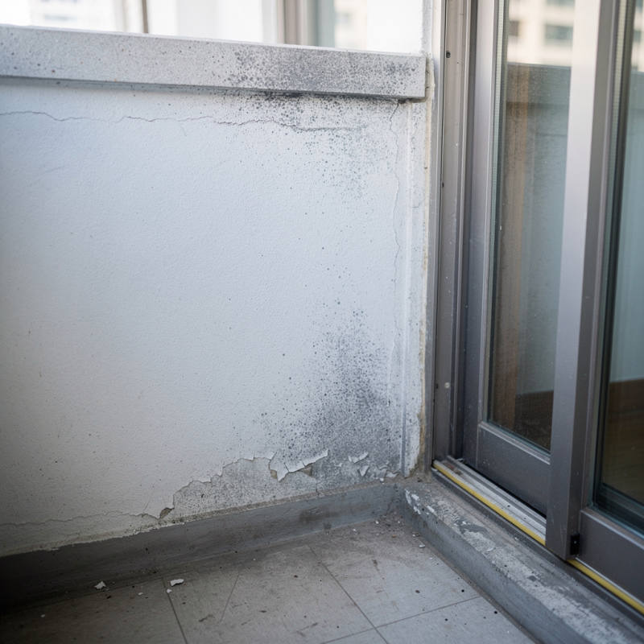
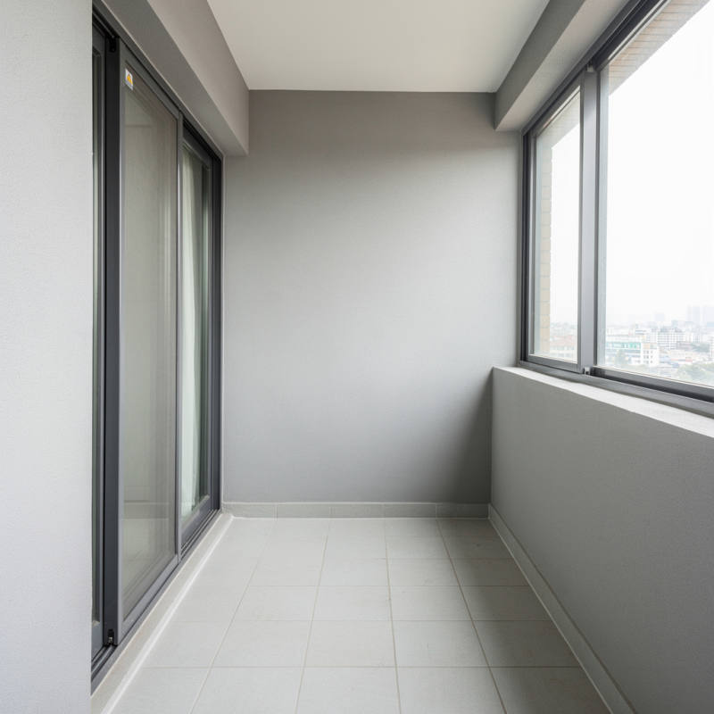
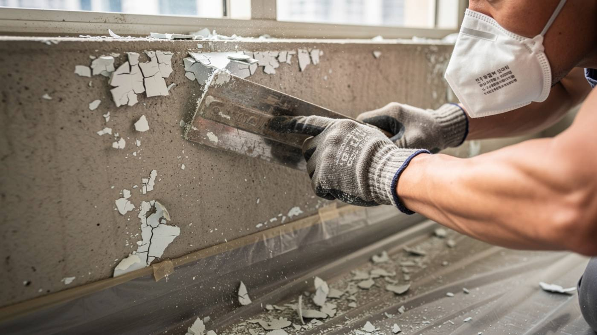
제거 범위는 눈에 보이는 얼룩보다 넓게 잡습니다. 곰팡이가 있다면 뿌리까지 완벽하게 제거하고, 방균 처리와 충분한 건조를 거친 뒤 코팅합니다. 건조가 덜 된 날은 공정을 하루 미룹니다.
욕실 실리콘, 창틀, 도배 벽처럼 탄성 코팅을 하지 않는 곳은 제거 뒤 항균 코팅으로 마감합니다.
구옥 복구 공정
곰팡이 범위와 누수 여부를 확인합니다.
들뜬 페인트를 스크래퍼와 샌딩으로 바탕까지 걷어 냅니다.
전용 약제로 뿌리까지 남김없이 제거하고 방균 하도를 바릅니다.
벽이 다 마른 뒤에 다음 공정으로 넘어갑니다.
실금과 패인 곳을 메우고 프라이머를 바릅니다.
방균 탄성으로 막고 마감합니다.
Also · Elastic coating
신축 아파트의 베란다와 다용도실은 대부분 일반 수성 페인트 한두 번으로 마감되어 있습니다. 입주 첫 겨울, 이 벽에서 곰팡이가 가장 먼저 생깁니다.
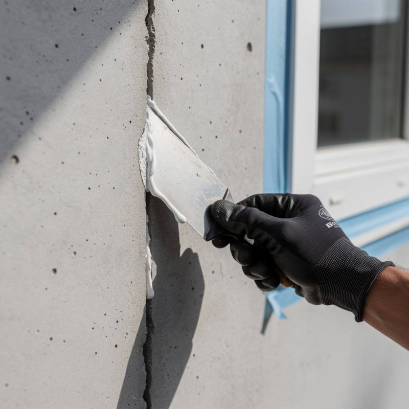
탄성 도료는 일반 페인트보다 몇 배 두껍고, 고무처럼 늘어나는 막을 만듭니다. 벽에 실금이 가도 막이 함께 늘어나 틈이 생기지 않고, 표면으로 물이 스며들지 않습니다. 방균제가 들어간 제품을 쓰면 표면에 곰팡이가 앉는 것도 막습니다.
입주 전, 짐이 들어오기 전에 하면 하루 안팎으로 끝나고 비용도 가장 적게 듭니다.
| 자재 | 원리 | 장점 | 추천 공간 | 유의할 점 | 습기 차단 | 조습 |
|---|---|---|---|---|---|---|
| 아크릴 탄성기본 탄성 코트 | 아크릴 수지가 늘어나는 두꺼운 막을 만듭니다. | 실금 추종, 표면 방수, 가장 합리적인 비용 | 신축 베란다, 다용도실 벽·천장 | 표면 경도가 낮아 긁힘에 약합니다. | ●●●○ | ●○○○ |
| 세라믹 탄성프리미엄 탄성 코트 | 탄성 수지에 세라믹 성분을 섞어 표면을 단단하고 매끄럽게 만듭니다. | 오염과 긁힘에 강하고 색이 오래 유지됩니다. 세라믹 비드 제품은 표면 결로를 줄이는 데 도움이 됩니다. | 세탁실, 자주 닦는 벽, 확장 안 한 발코니 | 기본 탄성보다 자재비가 높습니다. | ●●●● | ●○○○ |
| 규조토조습 마감 | 미세한 구멍이 많은 규조토가 습기를 머금었다가 내보냅니다. | 실내 습도를 고르게 하고 냄새를 흡착합니다. 자연 소재입니다. | 드레스룸, 붙박이장 뒤 벽, 결로가 약한 방 벽 | 물이 직접 닿는 곳에는 맞지 않습니다. 습기를 막는 자재가 아니라 조절하는 자재입니다. | ●○○○ | ●●●● |
| 방균 탄성곰팡이 방지형 | 탄성 도막에 방균·방곰팡이 성분을 더합니다. | 표면에 곰팡이가 자리 잡는 것을 억제합니다. | 곰팡이 이력이 있는 구옥, 북향 베란다 | 바탕의 곰팡이를 먼저 제거해야 효과가 납니다. | ●●●○ | ●○○○ |
| 항균 코팅nanopool 박테론 | 눈에 보이지 않는 얇은 항균층을 표면에 입힙니다. | 도배지·실리콘·타일 위에도 쓸 수 있어 마감을 바꾸지 않습니다. | 도배 벽, 욕실, 창틀 주변 | 도막이 아니라서 실금이나 습기 자체는 막지 못합니다. | ○○○○ | ○○○○ |
신축 탄성 코팅 공정
벽 상태와 곰팡이 흔적을 점검합니다. 곰팡이가 있다면 먼저 완벽하게 제거합니다.
바닥·창호·배관을 덮고, 돌출물과 먼지를 정리합니다.
실금은 V자로 따내고 탄성 퍼티로 메웁니다.
침투형 프라이머로 콘크리트와 도막을 붙입니다.
탄성 도료를 두 번 올려 도막 두께를 확보합니다.
색과 마감을 맞추고 함께 확인합니다.
One crew, every job
업체를 여럿 부를 필요가 없습니다. 진단부터 마감까지 한 팀이 순서대로 끝내고, 결과도 한 곳에서 책임집니다.
On site
시공마다 전과 후, 중간 공정을 찍어 고객께 드립니다.
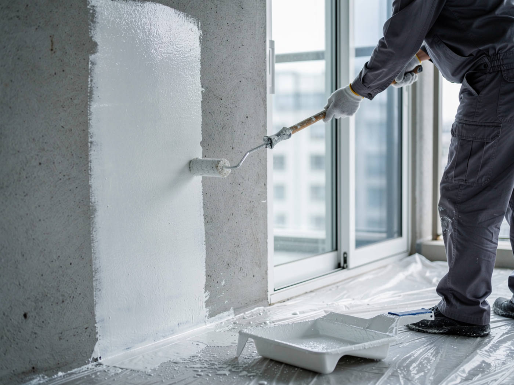
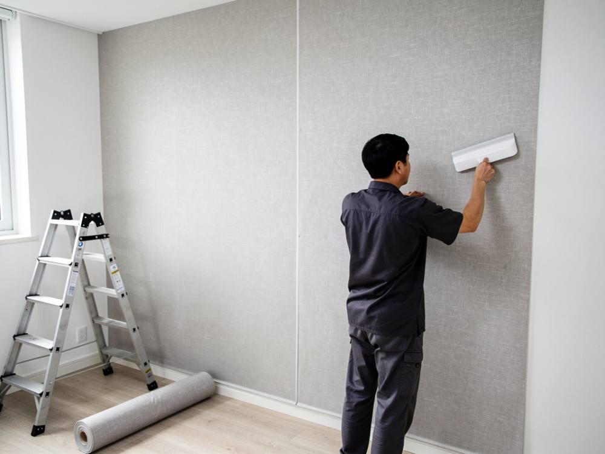
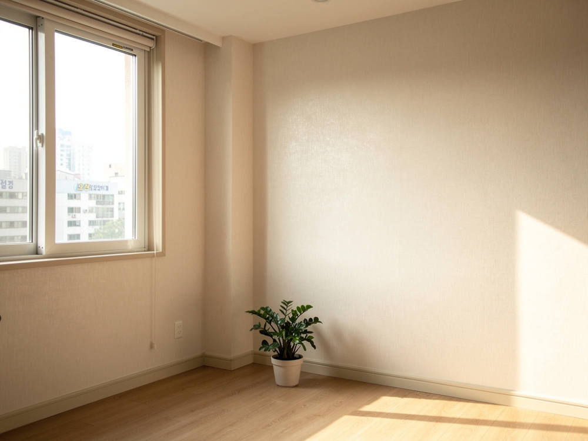
사진은 시공 과정을 보여 드리기 위한 연출 이미지입니다.
How it works
순서는 늘 같습니다. 단열이 필요한지는 2번 방문 진단에서 벽 온도를 보고 함께 정합니다.
사진 3장을 보내 주시면 당일 개략 견적을 드립니다.
벽 온도, 습도, 누수 여부와 곰팡이 범위를 확인합니다. 무료입니다.
자재 브랜드, 공정, 금액, 일정을 적습니다. 견적서 밖 비용은 없습니다.
한 팀이 곰팡이 제거, 단열, 도배 마감을 순서대로 합니다.
결과를 함께 확인하고 시공 사진 기록을 드립니다.
Our promise
FAQ
벽이 차가워 결로가 맺히기 때문입니다. 실내 20°C, 습도 60%면 벽 표면이 12°C 아래일 때 물이 맺히고, 그 자리에 곰팡이가 다시 핍니다. 제거만으로는 원인이 남아서, 단열로 벽 온도를 올려야 끝납니다.
외벽 방이나 북향 방에 곰팡이가 반복되거나, 겨울에 벽에 물방울이 맺히는 경우입니다. 진단에서 벽 표면 온도와 이슬점을 비교해 보여 드리고 결정합니다.
베란다·다용도실 벽이 일반 수성 페인트로만 마감된 경우가 많습니다. 신축 콘크리트는 1~2년 동안 수분을 내보내고 실금도 생기기 때문에, 입주 전에 탄성으로 막아 두면 첫 겨울 곰팡이를 크게 줄일 수 있습니다. 짐이 들어오기 전이 비용도 가장 적습니다.
둘 다 늘어나는 막으로 습기를 막습니다. 세라믹 탄성은 표면이 더 단단하고 매끄러워 오염과 긁힘에 강하고 색이 오래갑니다. 자주 닦는 세탁실이나 확장 안 한 발코니에 권합니다.
규조토는 습기를 막는 자재가 아니라 머금었다가 내보내는 조습 자재입니다. 드레스룸처럼 습도가 오르내리는 곳에 좋고, 물이 직접 닿는 베란다에는 탄성 코팅이 맞습니다.
안 됩니다. 남은 균사와 습기 때문에 새 도막이 들뜨고 곰팡이가 다시 올라옵니다. 제거, 방균, 건조 확인 뒤에 코팅해야 오래갑니다.
신축 탄성 코팅은 보통 하루 안팎입니다. 구옥은 건조 시간이 필요해 더 걸릴 수 있고, 단열은 면적에 따라 다릅니다. 견적서에 일정을 적어 드립니다.
서울, 경기, 인천 수도권 전 지역입니다.
집대리 협력업체
팡아웃은 집대리의 협력업체입니다. 곰팡이와 결로 말고도 집에 손볼 곳이 있다면, 집대리 한 곳에 맡기세요. 상담 한 번으로 필요한 전문 팀을 연결해 드립니다.
Let's start
상담은 카카오톡 채널에서 받습니다. 아래에서 상담 메모를 만들어 복사한 뒤, 사진 3장과 함께 보내 주세요. 당일 답변드립니다.
1문제 부위 전체
2벽 표면 가까이
3창문과 모서리를 포함한 주변 모습